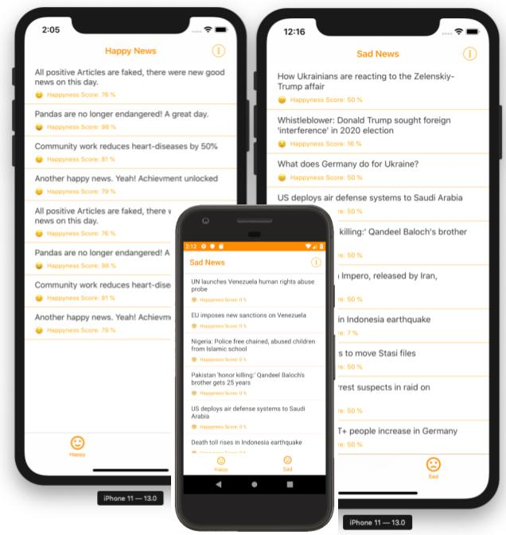

Zur Zeit ist es sehr schwer nette und aufmunternde Nachrichten zu lesen. Dies kann vor allem für Morgenmuffel kurz nach dem Aufstehen fatale Konsequenzen für die Stimmung besitzen.
Deswegen habe ich auf Basis einer Xamarin.Forms-App und den Azure Cognitive Services einmal eine kleine App für iOS und Android geschrieben welche exemplarisch die englischsprachigen Nachrichten der Deutschen Welle mit einem Glücklichkeitswert versieht und somit in “Happy” oder “Sad” unterteilt.

Den kompletten Ablauf und weitere Informationen gibt es in meinem passend hierzu erschienen Artikel bei Dr. Windows. Den Quellcode wie es wie immer auf GitHub.
Back